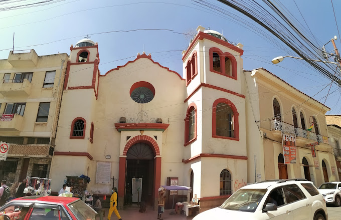

La Catedral metropolitana de San Sebastián en Cochabamba o simplemente catedral de Cochabamba es el templo principal de la Iglesia católica en la archidiócesis de Cochabamba, ubicado en la Plaza 14 de septiembre de la ciudad de Cochabamba, Bolivia.
La Catedral metropolitana de San Sebastián en Cochabamba o simplemente catedral de Cochabamba es el templo principal de la Iglesia católica en la archidiócesis de Cochabamba, ubicado en la Plaza 14 de septiembre de la ciudad de Cochabamba, Bolivia.Iglesia colonial barroca reconstruida en varias ocasiones, con obras de arte cristiano y decoración vistosa.En el interior se resguardan valiosas obras del arte cristiano; uno de los espacios más visitados es la Capilla del Señor de Mayo, que contiene interminables placas de feligreses agradecidos por los favores recibidos. El retablo principal contiene al centro un tabernáculo cubierto con una cúpula, por encima se encuentra la imagen de Jesús Crucificado, el remate del retablo es un arco trilobulado, la mayor parte de la decoración es una combinación de detalles revestidos con pan de oro sobre fondo blanco y estilo barroco mestizo.